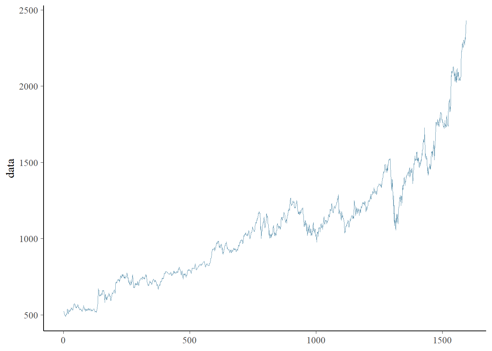
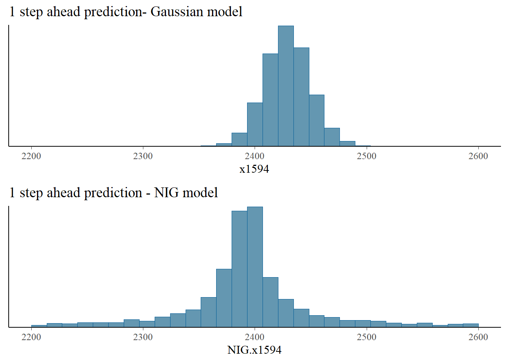
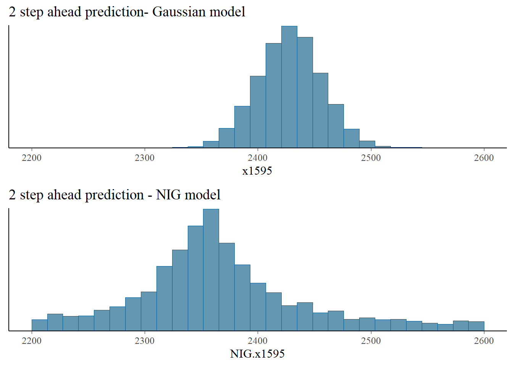
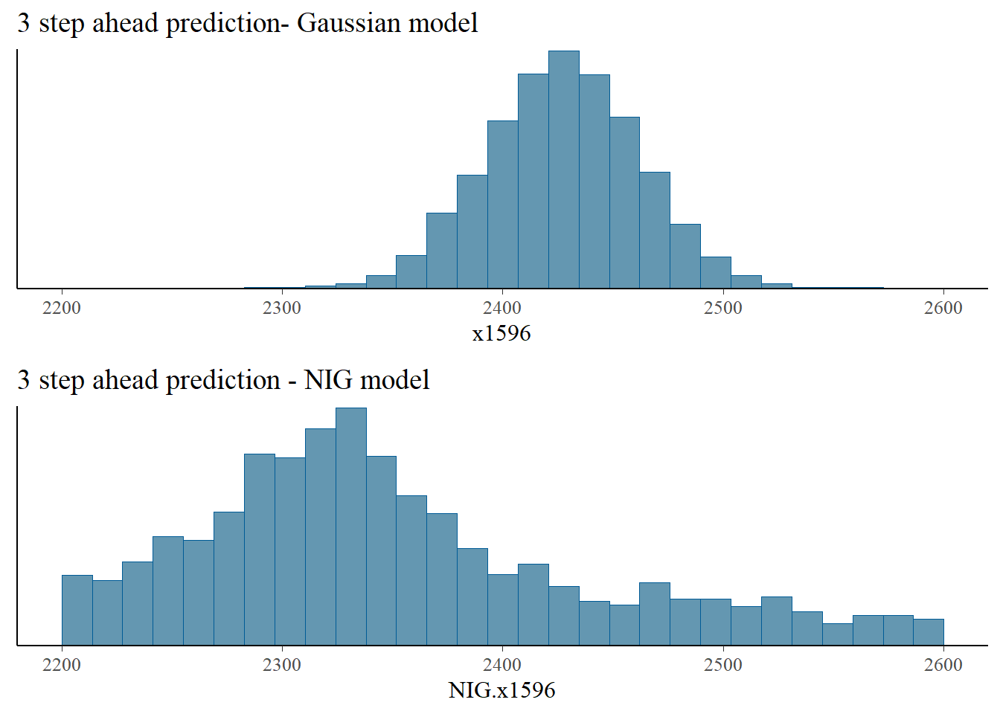

Chapter 5 Time series
5.1 Autogressive process driven by NIG noise
One of the most simple and intuitive models to study time series data is the first-order autoregressive process driven by Gaussian noise, also denoted as AR(1). Here we use an AR(1) driven by NIG noise to model financial data. Heavier-tailed distributions for the noise can better capture extreme movements in the price of equities, which is crucial from a risk management perspective. This process is given by:
\[ x_t = \rho x_{t-1} + \sigma\Lambda_t, \] where \(\Lambda_t \sim NIG(\eta^\star,\zeta^\star)\) independent from \(X_t\). In our framework we have \(\mathbf{D}_{AR1}\mathbf{x}=\sigma\mathbf{\Lambda}(\eta^\star,\zeta^\star)\), where:
\[ \mathbf{D}_{AR1} = \begin{pmatrix} \sqrt{1-\rho^2} & & & & & \\ -\rho & 1 & & & & \\ & -\rho & 1 & & & \\ & & \ddots & \ddots & \\ & & & -\rho & 1 \end{pmatrix}, \] and the first element of the matrix is \(\sqrt{1-\rho^2}\) so that \(x_t\) is a stationary process.
We study the end-of-day closing prices of the Google equity obtained from Yahoo finance from 31 December 2014 to 30 April 2021. This dataset was previously studied in Dhull and Kumar (2021) which used an autoregressive process of order 1 as suggested by the PACF plot. The previous authors used a conditional representation similar to eq. (2.1) and the auxiliary variables \(V_i\) to obtain MLE estimates for the parameters using the EM algorithm. However, this problem could have been turned into a simple optimization problem by using the joint density in (2.4) where it is possible to relate the data directly with the model parameters without needing the hidden variables \(V_i\). Since there is a clear positive trend in the data, we also add a drift parameter \(c\):
\[\begin{equation} x_t = c +\rho x_{t-1} + \sigma\Lambda_t, \tag{5.1} \end{equation}\]
5.1.1 Libraries and data
library(readr) # Read csv files
library(cmdstanr) # CmdStan R interface
library(posterior) # Process the output of cmdstanr sampling
library(bayesplot) # Pair and trace plots
library(ggplot2) # More plots
library(SuppDists) # Evaluate density of a InvGauss distribution
source("files/utils.R") # Several utility functions
options(mc.cores = parallel::detectCores())goog <- as.data.frame(read_csv("files/data/GOOG.csv", col_names = TRUE))
data <- goog$Close #closing prices
N <- length(data)
mcmc_trace(as.data.frame(iter= 1:N, x = data))
5.1.2 Priors
The PC prior for \(\sigma\) is an exponential distribution with some rate parameter \(\theta_\sigma\). To find this rate parameter we relate \(\sigma\) with a more intuitive quantity which is the marginal standard deviation \(\sigma_{marg} = \sigma/\sqrt{1-\rho^2}\). As suggested in Simpson et al. (2017) we use the probability statement \(P(\sigma_{marg}>U_\sigma)=\alpha_\sigma\), which leads to:
\[ \theta_{\sigma}(\rho) = -\frac{\log(\alpha_\sigma)}{U_\sigma\sqrt{1-\rho^2}} \]
If we consider \(P(\sigma_{marg}>100)=0.1\) then the log-density of the prior for \(\sigma\) conditioned on \(\rho\) is given by:
thetas = 0.02/sqrt(1-rho)
target += -log(thetas) - thetas*sigmaThe PC prior for \(\rho\) was derived in Sørbye and Rue (2017). We consider the NIGAR model as an extension of a base model where there is no change in time (\(\rho=1\)), and so the PC prior for \(\rho\) has log-density:
target += -sqrt(1 - rho)*theta - 0.5*log(1 - rho)As suggested in Sørbye and Rue (2017) is to find theta based on the probability statement \(P(\rho>U_\rho)=\alpha_\rho\). The solution to this equation is given implicitly by:
\[ \frac{1-\exp (-\theta \sqrt{1-U_\rho})}{1-\exp (-\sqrt{2} \theta)}=\alpha_\rho \]
We consider \(P(\rho>0.5)=0.75\), which leads to the rate parameter \(\theta \approx 1.55\).
As motivated in Cabral, Bolin, and Rue (2022) we used an exponential prior for \(\eta^\star\) and a Laplace prior for \(\zeta^\star\), both with different rate parameters. We scaled the PC priors for \(\eta^\star\) and \(\zeta^{star}\) based on the following probability statements: \(P(Q(\eta^\star)>2)=0.1\) and \(P(|\gamma|>2)=0.1\). \(Q(\eta^\star)\) quantifies how much more large events (larger than \(3\sigma\)) the NIG noise has compared with Gaussian noise in the symmetric case (\(\zeta^\star=0\)): \[Q(\eta^\star)=\frac{P(|\Lambda_i|>3\sigma)}{P(|Z_i|>3\sigma)}.\] The probability statements lead to the rate parameters \(\theta_{\eta^\star}\approx 15\) and \(\theta_{\zeta^\star} \approx 6.5\). These priors are declared in the Stan model as follows:
//prior for etas
target += - theta_etas*etas;
//prior for zetas
target += - theta_zetas*fabs(zetas);Finally we use a \(N(0,1)\) prior for the drift parameter \(c\).
5.1.3 Gaussian fit
The Stan model for the standard AR(1) model is:
for (n in 2:N)
x[n] ~ normal(c + rho*x[n-1], sigma);We need to pass to Stan the number of observations, the equity data and the rate parameters of the priors of \(\eta^\star\) and \(\zeta^\star\).
dat1 <- list(N = N,
x = data,
theta_etas = 15,
theta_zetas = 3)model_stan_Gauss <- cmdstan_model('files/stan/ARGauss.stan')
fit_Gauss <- model_stan_Gauss$sample(data = dat1,
chains = 4,
iter_warmup = 500,
iter_sampling = 3000)
fit_Gauss$save_object("files/fits/ARGauss.rds")fit_Gauss <- readRDS("files/fits/ARGauss.rds")
knitr::kable(head(fit_Gauss$summary(),4), "simple", row.names = NA, digits=2)| variable | mean | median | sd | mad | q5 | q95 | rhat | ess_bulk | ess_tail |
|---|---|---|---|---|---|---|---|---|---|
| lp__ | -5572.47 | -5572.15 | 1.22 | 1.01 | -5574.85 | -5571.14 | 1 | 5711.61 | 7664.48 |
| sigma | 19.90 | 19.89 | 0.35 | 0.35 | 19.32 | 20.50 | 1 | 8367.34 | 8298.13 |
| rho | 1.00 | 1.00 | 0.00 | 0.00 | 1.00 | 1.00 | 1 | 6863.14 | 7401.70 |
| c | 1.89 | 1.87 | 0.55 | 0.54 | 1.01 | 2.82 | 1 | 7210.87 | 6149.14 |
The fit was successful with no warning messages. The parameter \(\rho\) is very close to 1, so the model is close to an RW1 model.
5.1.4 NIG fit
Now, for the model declaration, we just need to change the following line of code.
for (n in 2:N)
x[n] ~ nig(c + rho*x[n-1], sigma, etas, zetas, 1);model_stan_NIG <- cmdstan_model('files/stan/ARNIG.stan')
fit_NIG <- model_stan_NIG$sample(data = dat1,
chains = 4,
iter_warmup = 200,
iter_sampling = 1000)
fit_NIG$save_object("files/fits/ARNIG2.rds") #no warningfit_NIG <- readRDS("files/fits/ARNIG2.rds")
knitr::kable(head(fit_NIG$summary(), 6), "simple", row.names = NA, digits=2)| variable | mean | median | sd | mad | q5 | q95 | rhat | ess_bulk | ess_tail |
|---|---|---|---|---|---|---|---|---|---|
| lp__ | 411.34 | 411.64 | 1.69 | 1.63 | 408.23 | 413.51 | 1.00 | 1397.01 | 2089.07 |
| sigma | 947.99 | 942.74 | 90.48 | 91.82 | 811.70 | 1105.53 | 1.01 | 988.72 | 1618.74 |
| rho | 0.98 | 0.98 | 0.00 | 0.00 | 0.98 | 0.99 | 1.01 | 951.11 | 1770.60 |
| etas | 47.70 | 47.62 | 1.78 | 1.76 | 44.79 | 50.66 | 1.00 | 1985.15 | 1847.79 |
| zetas | 0.00 | 0.00 | 0.00 | 0.00 | 0.00 | 0.00 | 1.00 | 3984.35 | 2093.38 |
| c | 2.57 | 2.55 | 0.97 | 0.99 | 0.96 | 4.22 | 1.00 | 1438.07 | 1861.50 |
The fit was successful with no warning messages. The parameter \(\eta^\star\) is quite large (posterior mean of 48) indicating a clear heavy-tailed behavior for the noise, while the parameter \(\zeta^\star\) was close to 0, suggesting no need for an asymmetric distribution for the noise.
5.1.5 Comparizon
We compare the Gaussian and NIG latent models using the leave-one-out cross-validation method of Vehtari, Gelman, and Gabry (2017), which gave unequivocal preference for the NIG model.
fit_Gauss$loo()##
## Computed from 12000 by 1592 log-likelihood matrix
##
## Estimate SE
## elpd_loo -7026.5 65.7
## p_loo 6.4 1.3
## looic 14053.0 131.5
## ------
## Monte Carlo SE of elpd_loo is 0.0.
##
## All Pareto k estimates are good (k < 0.5).
## See help('pareto-k-diagnostic') for details.fit_NIG$loo()##
## Computed from 4000 by 1592 log-likelihood matrix
##
## Estimate SE
## elpd_loo 1228.0 2.8
## p_loo 0.7 0.0
## looic -2456.1 5.6
## ------
## Monte Carlo SE of elpd_loo is 0.0.
##
## All Pareto k estimates are good (k < 0.5).
## See help('pareto-k-diagnostic') for details.5.1.6 Predictions
We generate samples of the price distribution in the 3 days after the last recorded day based on eq. (5.1) for the Gaussian and NIG models.
rho <- as_draws_df(fit_Gauss$draws("rho"))$rho
c <- as_draws_df(fit_Gauss$draws("c"))$c
sigma <- as_draws_df(fit_Gauss$draws("sigma"))$sigma
n_draws <- length(rho)
x1594 = c + rho*data[N] + sigma*rnorm(n_draws)
x1595 = c + rho*x1594 + sigma*rnorm(n_draws)
x1596 = c + rho*x1595 + sigma*rnorm(n_draws)rho <- as_draws_df(fit_NIG$draws("rho"))$rho
c <- as_draws_df(fit_NIG$draws("c"))$c
etas <- as_draws_df(fit_NIG$draws("etas"))$etas
zetas <- as_draws_df(fit_NIG$draws("zetas"))$zetas
sigma <- as_draws_df(fit_NIG$draws("sigma"))$sigma
n_draws <- length(rho)
NIG.x1594 = c + rho*data[N] + sigma*rNIG(n_draws, 0, 1, etas, zetas, h = 1)
NIG.x1595 = c + rho*NIG.x1594 + sigma*rNIG(n_draws, 0, 1, etas, zetas, h = 1)
NIG.x1596 = c + rho*NIG.x1595 + sigma*rNIG(n_draws, 0, 1, etas, zetas, h = 1)We compare next the distribution of the Gaussian and NIG predictions. The NIG predictions have heavier tails, and indicate a higher possibility of extreme price movements, compared with the Gaussian model, which underestimates the likelihood of such extreme events.
bayesplot_grid(
mcmc_hist(as.data.frame(iter = 1:n_draws, x=x1594)),
mcmc_hist(as.data.frame(iter = 1:n_draws, x=NIG.x1594)),
titles = c("1 step ahead prediction- Gaussian model", "1 step ahead prediction - NIG model"),
xlim = c(2200,2600)
)
bayesplot_grid(
mcmc_hist(as.data.frame(iter = 1:n_draws, x=x1595)),
mcmc_hist(as.data.frame(iter = 1:n_draws, x=NIG.x1595)),
titles = c("2 step ahead prediction- Gaussian model", "2 step ahead prediction - NIG model"),
xlim = c(2200,2600)
)
bayesplot_grid(
mcmc_hist(as.data.frame(iter = 1:n_draws, x=x1596)),
mcmc_hist(as.data.frame(iter = 1:n_draws, x=NIG.x1596)),
titles = c("3 step ahead prediction- Gaussian model", "3 step ahead prediction - NIG model"),
xlim = c(2200,2600)
)